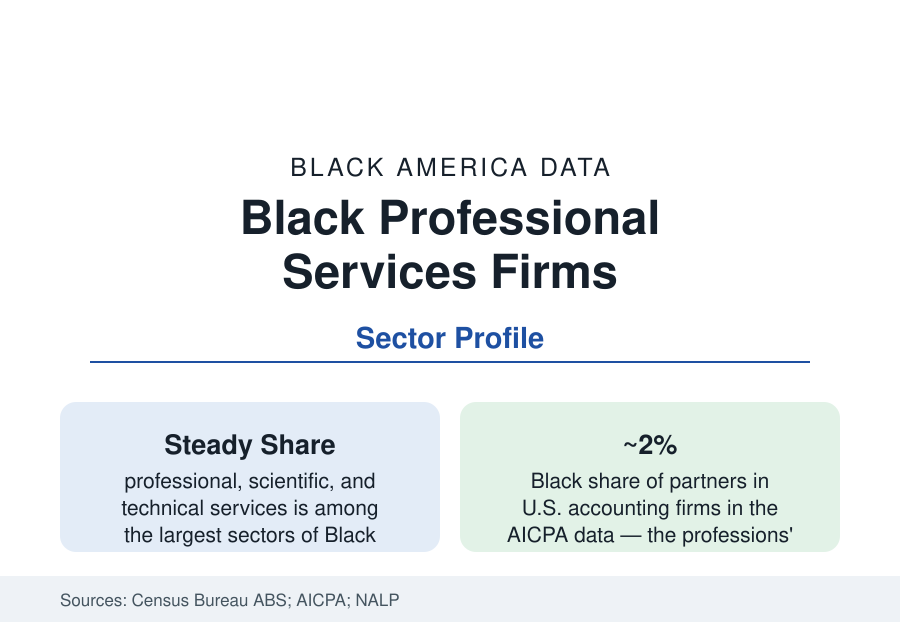

Black Business
Black-Owned Professional Services Firms: Law, Accounting, and Consulting
Professional services are Black business's white-collar tier — from the largest Black law firms to the accounting profession's thin partnership ranks. The sector data.

Professional, scientific, and technical services rank among the largest sectors of Black employer-firm ownership in the Annual Business Survey — the white-collar tier of Black business: law firms, accounting practices, management and IT consultancies, engineering and architecture firms, advertising and design studios. The sector's firms sell credentialed expertise, which makes its data a direct readout of the education section's pipelines meeting the market. This article reports the professional services file.
Law Firms: The Solo Base and the Boutique Tier
Black legal practice distributes in the ABA's data as the law profile described: a broad base of solo and small firms (the neighborhood practice — family, injury, defense, real estate — that forms the Black bar's working majority), a public-sector-adjacent tier, and a boutique tier of Black-owned firms of genuine scale (firms of dozens to over a hundred lawyers, several of them national in footprint, built substantially on the corporate diversity-supplier channel and the plaintiffs' and defense bars' economics). The large-firm partnership census (Black equity partners around two percent in the NALP data) is the sector's context: the Black-owned firm exists partly because the integrated firm's summit admitted so few. The firms' economics run on relationships the census cannot count — referral networks from the bar associations (the National Bar Association, founded 1925, is the profession's Black institution), the church-and-fraternity civic web, and the corporate supplier programs whose legal-spend data the firms' rainmakers cultivate.
Accounting: The Thinnest Partnership File
Accounting's diversity data are the professions' most extreme: Black CPAs form roughly two percent of the profession in the AICPA's counts — a share essentially flat across decades — and Black partners at U.S. accounting firms run at about the same fraction, against the Big Four's global resources and diversity reporting. The National Association of Black Accountants (founded 1969, its founding generation famously nine New York accountants) is the pipeline's institution, and the pipeline math is the education file's: accounting majors, the 150-hour rule's cost, the CPA exam's passage economics, and firm recruiting's campus map compound into the two percent. Black-owned CPA firms distribute accordingly: a tier of established regional firms (several dating to the mid-twentieth century, serving the government-audit and nonprofit markets), the government-contracting channel (the federal audit and advisory economy's set-aside history), and the small-practice base serving Black business itself — the firm that does the beauty, restaurant, and construction profiles' books.
Consulting and Technical Services: The Contracting Channel
The sector's growth engine is management and technical consulting, where the federal and corporate contracting channels weight heaviest: the Washington metro's Black Beltway firms (the DC profile's contractor economy), IT services and cybersecurity firms riding the technology profile, engineering and architecture practices (Black architects hold roughly two percent of licenses in the NCARB data — the design professions' matching figure), and the staffing industry, which includes some of the largest Black-owned companies in America by revenue (the billion-dollar staffing and IT firms that top the Black Enterprise industrial/service lists). The ABS receipts data show the sector's Black firms punching at their largest relative weight in these B2B categories — government and enterprise clients, credential-gated, relationship-driven — against the consumer sectors' capital constraints. The 8(a) and supplier-diversity programs' lifecycle data (entry, graduation, the post-program survival studies) are the sector's policy file, contested between the programs' defenders' outcome data and the legal challenges that have redesigned them in the current decade.
Creative and Knowledge Services
The sector's creative wing — advertising agencies, public relations, design, market research — carries the media profile's ownership argument in business form: Black-owned agencies (a historic set dating to the 1960s–70s founders, a new digital generation behind them) bill a small fraction of the industry's totals in the trade estimates while serving as the general market's hired interpreters of the buying-power data — the arrangement the industry's own diversity reports now audit (the ANA's agency-diversity censuses record the ethnic-agency tier's stagnation in hard percentages). Research and polling firms, translation and cultural-consulting practices, and the expert-services economy complete a wing whose product is precisely the knowledge the rest of the market lacks — the sector's most defensible moat in the data, and its most persistently underpriced one.
Reading the Professional Services Data
Professional services are where Black business meets the credential economy head-on, and the data show both the meeting's success (a top-tier sector of Black ownership, firms of national scale) and its tax (the two-percent professions rationing the partnerships the independents then build outside). The sector's firms are the business section's brain trust — the lawyers, accountants, and engineers who paper every other profile's transactions — and their own tables deserve the reading they give everyone else's.
More in Black Business
Black-Owned Businesses: Counts, Receipts, and the Representation Gap
About 161,000 Black-owned employer firms and three million solo ventures: how the Census Bureau counts Black business ownership, where firms concentrate, and the gap between population share and business share.
Black Median Net Worth: The Wealth Gap in Federal Reserve Data
The Federal Reserve puts Black median family net worth at $44,900, against $285,000 for White families — about 16 cents on the dollar. The widest gap in economic data.
Black Buying Power: The $1.8 Trillion Consumer Economy
Black buying power is estimated at about $1.8 trillion — larger than the economy of most nations. What the figure measures, who produces it, and what it buys.
Source: U.S. Census Bureau, Annual Business Survey; American Bar Association and NALP data; AICPA diversity data; National Bar Association and NABA records.